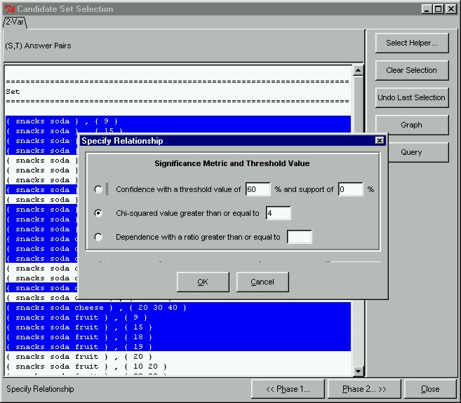

 |
Specifying the Relationship Metric and Significance ThresholdAfter having selected only those candidate pairs we are interested in, we can proceed to Phase II where we select the relationship metric and specify the significance threshold. To do this, we click on the "Phase 2 >>" button at the bottom of the Candidate Set Selection window. This will open the Specify Relationship dialog box. As you can see here, our prototype gives the user three different relationship metrics to judge association by. This is different from the classical model, which is only limited to one metric. In this example, we want to find all correlated candidate pairs whose chi-squared value is greater than the value 4.
|